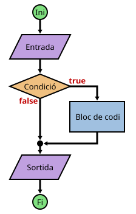

Una forma de especificar què ha de fer un programa, és crear un diagrama de flux.
Aquests diagrames donaran una idea del quins blocs s'han de programar i ajudaran a preveure casos que potser no s'havien contemplat en un principi.
Per fer un diagrama de flux s'utilitzen figures geomètriques i text.
A continuació hi ha un diagrama genèric (dins de les figures caldria especificar què ha de fer cada bloc).
I a sota un programa en JavaScript que podria ser l'equivalent a aquest diagrama.

// Inici: definir variables
let preu;
// Entrada de dades
preu = parseFloat(prompt("Preu de l'article? "));
// Condicional i bloc de codi
if (preu >= 1000) {
let dte = preu * 10 / 100;
preu -= dte;
}
// Mostrar resultat
alert("Preu de venda: " + preu);
Al programar de forma estructurada s'utilitzen molt els blocs de codi.
En aquests casos cal tenir en compte que no és el mateix definir una variable dins o fora d'un bloc:
les variables, per defecte, són visibles (es poden utilitzar) dins del bloc i sub-blocs on s'han definit.
Una possibilitat seria definir totes les variables en el bloc més extern, però no és el més recomanable:
si una variable només s'ha d'utilitzar dins d'un bloc, s'ha de definir dins d'aquest bloc.
let a = 5, b = 3;
if (a > b) {
let t; // Variable visible només dins d'aquest bloc
t = a;
a = b;
b = t;
}
alert("a = " + a + "\nb = " + b);
alert("t = " + t); // ERROR: t no és visible aquí
Fins ara, el codi dels programes ha sigut estrictament lineal: comença en la primera línia i s'executen totes i cadascuna en ordre, només una vegada i fins arribar a l'ultima.
Amb les estructures condicionals i iteratives, pot haver blocs de codi que no s'executin o que s'executin més d'una vegada.
En aquests casos, si el programa no funciona correctament, pot ser difícil trobar on està l'error.
Per sort, els IDEs tenen una eina que ens facilita aquesta tasca: el depurador (debugger).
Aquesta eina ens permet aturar el programa quan arribi a un punt determinat, executar les instruccions pas a pas o continuar l'execució fins que trobi un altre punt d'aturada.
També mostra els valors que tenen les variables en aquest instant.